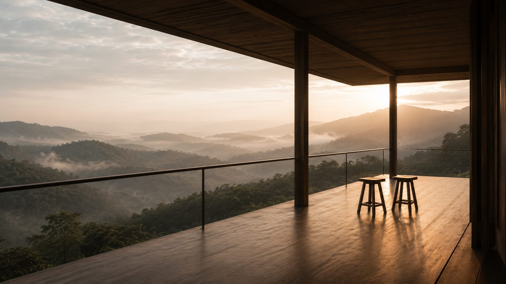

Tanya dulu,
tidak apa-apa
Pemesanan tidak diselesaikan di halaman ini. Isi keterangan di bawah, dan pertanyaannya dikirim lewat WhatsApp — dibalas dalam satu hari, oleh orang.
Hal-hal teknis
Waktu masuk dan keluar
Masuk mulai pukul 14.00, keluar sebelum pukul 11.00. Kalau datang lebih awal, tas bisa dititipkan di ruang tengah dan jalan setapaknya tetap boleh dipakai.
Cara sampai ke sini
Dari Rangkasbitung sekitar dua jam berkendara. Kendaraan berhenti di ujung kampung, lalu dua puluh menit berjalan kaki menanjak. Tas dibawakan. Kalau ada yang tidak kuat berjalan, beri tahu saat memesan — ada jalan memutar yang lebih landai tapi lebih lama.
Pembatalan
Batal lebih dari 14 hari sebelum tanggal masuk: dikembalikan penuh. Antara 7 sampai 14 hari: dikembalikan separuh. Kurang dari 7 hari: tidak dikembalikan, tapi tanggalnya bisa dipindah satu kali dalam enam bulan.
Aturan di dalam area
Tidak ada televisi, dan pengeras suara tidak dipakai di mana pun. Merokok hanya di teras masing-masing. Alas kaki dilepas sebelum naik ke lantai tanah. Anak-anak boleh, tapi sungainya tidak berpagar.
Sinyal dan listrik
Sinyal telepon ada di teras Halimun dan di jalan setapak dekat gerbang; di paviliun lain hampir tidak ada. Listrik dari surya, cukup untuk lampu dan mengisi daya telepon, tidak cukup untuk pengering rambut atau pemanas.
Menginap paling singkat
Dua malam. Satu malam habis untuk datang dan pergi, dan hampir semua yang menginap semalam bilang mereka baru merasa sampai ketika sudah harus turun.